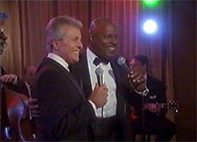
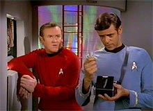
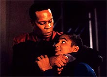

De forma a entender a paixo que o fs de Deep
Space Nine nutrem pela srie e compreender um pouco melhor a
prpria srie no processo, vamos fazer duas perguntas hipotticas
e apresentar respostas que so normalmente encontradas quando
tais assuntos so trazidos para a discusso.
Se for perguntado aos fs de DS9 qual aspecto da srie
mais os atraem, obteramos (tipicamente) respostas, tais como:
Suas comdias, sua capacidade de rir de si prpria e a sua
conscincia (quando necessria) de se tratar apenas de uma srie
de TV;
Seu intenso drama, as tragdias (em diferentes escalas)
retratadas e um inerente senso de solido e de busca interior e
auto-entendimento na prpria concepo da srie;
Os "tons de cinza", baseados na noo de que na vida
real no existe de fato nem bem e nem mal, e que certos conflitos
e diferenas no tm soluo fcil, e mesmo existem alguns
que no possuem soluo alguma;
Questes polticas e filosficas, de f e religio;
Espetaculares cenas de ao, no formato "live action"
ou em batalhas espaciais, e excepcionais valores de produo
chegando em algumas momentos a serem novidade no somente em Jornada
mas na TV em geral;
A apresentao de um diferente "lado negro" (um que
sempre existiu, mas nunca foi exposto como em DS9) da
Federao e da Frota Estelar;
Finalmente, uma identidade e atitude prprias, que refletem uma
caracterstica fundamental da prpria condio humana, uma que
apaixona as pessoas.

Se for perguntado aos fs de DS9 qual perodo da srie
mais os atraem, obteramos (tipicamente) respostas tais como:
As duas primeiras temporadas, baseadas principalmente na interrelao
entre a Federao e Bajor, a religio e poltica interna
Bajoriana e o papel de Cardssia nessas questes;
As temporadas 3, 4 e 5 (a quinta temporada considerada pelos fs
a melhor temporada da srie E a melhor da histria de Jornada),
onde o foco da srie muda consideravelmente com a entrada dos
Dominion, como uma fora hostil, no incio da terceira temporada
(na realidade isso comeou no ltimo episdio da segunda
temporada, o excelente "The Jem'Hadar", mas todas
as cartas s foram pra mesa no episdio em duas partes que abre
a terceira temporada, "The Search", que possui
uma boa primeira parte e uma fraca concluso). O foco da srie
muda ainda mais com o rompimento do tratado de paz entre a Federao
e o Imprio Klingon, que se d no primeiro episdio da quarta
temporada, o excelente "The Way of the Warrior",
que tambm marca a entrada de Worf na srie. Na quinta temporada
descoberto que as hostilidades entre a Federao e o Imprio
Klingon foram produzidas por manipulaes do prprio Dominion,
Cardssia se alia potncia do quadrante Gama e uma guerra
entre as foras Federao/Klingons e Dominion/Cardassianas se
inicia, no ltimo episdio da quinta temporada, o clssico "Call
To Arms";
As duas ltimas temporadas, que tratam da guerra entre as duas
alianas, com os Romulanos acabando por lutar ao lado da Federao
e os Breen ao lado do Dominion;
Finalmente, existe mesmo uma teoria alternativa, defendida por boa
parte dos fs em um certa analogia saga "daquela outra
estao", que diz que a srie teve o seu "pico"
entre o episdio em duas partes da terceira temporada, talvez o
melhor episdio duplo da histria de Jornada, "Improbable
Cause"/"The Die Is Cast" e o excelente "Sacrifice
Of Angels", da sexta temporada. claro, sem desmerecer
o que veio antes e depois desta "janela" assim
estabelecida.
Apesar do amplo espectro de respostas para duas perguntas bastante
simples, uma coisa nenhum f de DS9 vai negar --que a cola
que liga todas estes diferentes temas, enfoques e arcos de histrias
e o motivo principal para eles assistirem esta srie em primeiro
lugar so os seus personagens. a forma como estes personagens
so caracterizados, escritos e atuados que faz de DS9 o
que ela . Nesta srie ns podemos sentir a dor e sofrimento de
um "bandido" e ao mesmo tempo sentirmos um gosto amargo
na boca pelas atitudes de um "mocinho", e mesmo no
saber onde colocar rtulo algum. Nesta srie podemos nos
identificar com os seus personagens pois eles so to falveis
e procuram por respostas como qualquer um de ns.
Esta coluna presta uma breve homenagem aos personagens desta srie,
atravs de seus principais relacionamentos. claro que muitos
relacionamentos marcantes ficaram de fora, como Quark & Odo,
Jake & Nog, Worf & Martok, Famlia Quark (Quark, Rom, Nog,
Leeta, Zek, Iskha, Mai'hardu, Brunt), mas outras colunas 
viro
no futuro a lidar de uma forma ou de outra com eles.
Comecemos no com um relacionamento em si, mas com um personagem,
um muito especial, a prpria estao que d nome srie.
Depois, continuamos com os principais relacionamentos da srie.
Leiam com carinho, pois, como diria Vic Fontaine, "Esta do
corao".
DEEP SPACE NINE (TEROK NOR):
O fato da srie ser baseada em uma estao espacial resgata o
conceito do "Home away from home" da bblia da srie
"Hill Street Blues", de 1981. Este formato favorece
naturalmente o desenvolvimento dos personagens e fortalece o
drama, pois fora os roteiristas a lidar com as conseqncias
dos acontecimentos passados (no uma condio suficiente
para drama de qualidade, mas sem dvida necessria).
"Esta a parte difcil, lidar com as conseqncias."
[Jadzia Dax em "Rejoined"]
Os cenrios da estao so iluminados de uma forma especial
que garante que possam ser filmados literalmente de qualquer
jeito, promovendo um ar acolhedor e intimista que atinge
diretamente o espectador. A concepo dos cenrios da estao
(e da prpria estrutura) parece cruzar uma atmosfera de "Western"
com a arquitetura gtica Cardassiana, evitando assim uma
abordagem "high-tech" e tornando-a mais do que preparada
para passar pelo teste do tempo.
"Uma coisa eu tenho que dizer sobre estes Cardassianos, eles
construram este lugar pra durar."
[Kira em "Invasive Procedures"]
A estao no contexto da srie serve como um smbolo para o
desenvolvimento dos prprios personagens e uma inequvoca
mensagem de esperana: se podemos transformar uma instalao de
minerao operada por escravos no principal posto de sobrevivncia
da galxia, ento podemos mudar qualquer coisa, inclusive nossas
prprias vidas.
"Existem milhes e milhes de mundos no universo, cada um
com muito de uma coisa e no o suficiente de outra, e o 'Grande
Contnuo' escoa atravs de todos eles como um poderoso rio, dos
que tem para os que precisam e de volta ao comeo. E se ns
pudermos naveg-lo com habilidade e sentimento, nossa nave ser
abastecida com tudo que nossos coraes desejarem."
[Nog em "Treachery, Faith and The Great River"]
"Para a melhor tripulao que qualquer capito poderia ter
(erguendo a taa para um brinde). Esta pode ser a ltima vez que
nos encontraremos todos juntos, mas no importa o que o futuro
nos reserve, no importa para quo longe ns viajemos, uma
parte de ns, uma parte muito importante, sempre permanecer
aqui, em Deep Space Nine."
[Ben Sisko em "What You Leave Behind"]
BASHIR & GARAK:
A interao entre um sonhador e ansioso por aventura e um homem
prtico que j passou por todo tipo de provao em sua vida
foi um sucesso imediato, desde o seu primeiro episdio juntos, o
bom "Past Prologue", na primeira temporada. At
o excelente episdio "Our Man Bashir", da quarta
temporada (em que os dois se envolvem no holoprograma de James
Bond de Bashir, em que o "bom doutor", claro, o
protagonista), eles mantiveram um certo tipo de relao
"Pupilo/Mentor". A partir dali o relacionamento ficou
mais parelho.
Bashir mostrou que tambm tinha tanto a esconder quanto Garak no
bom episdio "Doctor Bashir, I Presume" (da
quinta temporada), onde revelado que ele sofreu reengenharia
gentica, a mando dos seus pais, quando tinha sete anos. At ali
ele era um aluno medocre na escola. Essa revelao trouxe uma
fenomenal nova viso sobre tudo o que o personagem apresentou at
ento. Bashir tambm teve, no restante da srie, sua cota de
"aventuras reais de espionagem", no seu trato com a
Sloan e a Seo 31 (uma faco secreta da Federao anloga
"Tal Shiar" Romulana e "Ordem Obsidiana"
Cardassiana) e teve de lidar seguidamente com o fato de ser
"geneticamente aperfeioado", chegando mesmo a
encontrar um grupo de quatro pessoas que passaram pelo mesmo
processo, grupo que recebe o carinhoso apelido de "Jack Pack",
devido ao nome de um dos seus membros. Bashir acabou por
conseguir a sua Dax (Ezri Dax).
Garak foi do comeo ao fim uma figura trgica e perdeu tudo que
um ser vivo pode perder, a cena da despedida entre ele e Bashir no
ltimo e excelente episdio da srie, "What You Leave
Behind", em meio a uma Cardssia totalmente devastada
(literalmente reduzida a "paus e gravetos") de cortar
o corao.
"No (senhor Garak), apenas Garak, 'PLAIN AND SIMPLE GARAK'."
[Garak em "Past Prologue"]
"Alguns podem dizer que ns recebemos exatamente o que merecamos.
Porque apesar de tudo isto, ns no somos totalmente inocentes,
somos? E no estou falando apenas da ocupao Bajoriana --no,
toda a nossa histria est repleta de uma atitude de arrogante
agresso. Ns colaboramos com o Dominion, tramos todo o
quadrante Alfa... no existe dvida alguma: ns somos culpados
por tudo isto."
" claro que Cardssia ir
sobreviver (Doutor), mas no a Cardssia que eu conheci! Ns tnhamos
uma rica e antiga cultura --nossa literatura, msica, arte no
ficava atrs de nenhuma outra. Agora? Tudo isso est perdido ...
nossos melhores cidados, nossas mais brilhantes mentes ...
"
[Garak em "What You Leave Behind"]
"Eu vou sentir falta dos nossos almoos doutor."
"Oh, eu tenho certeza que nos veremos novamente."
"Eu gostaria de pensar que sim, mas nunca se sabe. NS
VIVEMOS EM TEMPOS INCERTOS."
[Garak e Bashir em "What You Leave Behind"]
(Alguns poderiam dizer, em mais uma analogia com "aquela
outra estao", que a srie Deep Space Nine
sobre a histria de Elim Garak. Eles no estariam nada errados
em afirmar tal coisa.)
BASHIR & O'BRIEN:
Desde que o seu relacionamento entrou em foco, no bom episdio "Armageddon
Game", da segunda temporada da srie, os dois se
tornaram inseparveis e passavam praticamente todo o tempo livre
juntos (Keiko, a partir do incio da terceira temporada, comeou
a passar cada vez menos tempo na estao, se dedicando a
pesquisas em Bajor e expedies).

Muita
cerveja, jogos de dardos e holoprogramas em que invariavelmente
eles lutavam lado a lado alguma batalha em que eles tinham certeza
absoluta que o seu lado na contenda seria totalmente exterminado.
O exemplo mais marcante dentre estes holoprogramas foi o da
batalha do lamo. Eles construram uma maquete do forte e comearam
a brincar no prprio bar do Quark. Um momento extremamente
tocante ocorre no episdio "What You Leave Behind",
pouco antes de se iniciar uma seqncia de "flashbacks"
com vrios momentos dos personagens ao longo da srie. O'Brien
termina de empacotar as suas coisas (ele e sua famlia vo para
a Terra aps o trmino da guerra com o Dominion --ele vai ser
professor da Academia da Frota Estelar) e j vai indo embora,
quando encontra em seus aposentos um dos soldadinhos da maquete do
lamo e como se fazendo a pergunta ao espectador: "Valeu a
pena tudo isto?" O'Brien fita o soldadinho com uma expresso
indescritvel enquanto toca uma vinheta de "The Minstrell
Boy" (o hino do personagem), e da se inicia a seqncia
de "flashbacks" com o tema do episdio ao fundo. A
despedida com um abrao sem palavras entre os dois, mais a frente
no episdio tambm comovente.
Talvez o ponto mais especial da amizade entre os dois se d na
cena do clssico episdio "Hard Time", da
quarta temporada, em que Bashir convence O'Brien a no cometer
suicdio. SOBRENATURAL!
"Quando ns estvamos crescendo, costumavam nos dizer que a
humanidade tinha evoludo --que a humanidade havia deixado pra trs
o dio e a fria. Mas quando chega a minha vez --quando eu tenho
a chance de provar que no importando o que algum pudesse vir a
fazer
comigo, eu ainda seria um ser humano evoludo --eu falhei. Eu
retribui bondade com sangue. Eu no sou melhor que um
animal."
"Os Argrathi fizeram tudo que podiam para arrancar a tua
humanidade --e, por um breve momento, eles conseguiram. Mas voc
no pode deixar aquele breve momento valer pela sua vida inteira.
Se voc o fizer --se voc puxar esta gatilho-- ento os
Argrathi tero vencido. Eles tero destrudo um bom homem. Voc
no pode deixar isto acontecer, meu amigo."
[O'Brien e Bashir em "Hard Time"]
KIRA & ODO:
Odo e Kira se encontraram pela primeira vez no curso da primeira
investigao de Odo, como "comissrio", como mostrado
em "flashback" no clssico episdio "Necessary
Evil" (da segunda temporada). Desde ento os dois sempre
colocaram um ao outro em um pedestal, como "exemplo mximo
de carter e decncia", ainda que ambos tenham provado ao
longo da srie que esto longe de ser perfeitos. Por exemplo,
Kira no prprio "Necessary Evil" e Odo no bom
episdio "Things Past" (da quinta temporada).
Kira percorreu um longo caminho desde aquela criana que aprendeu
a matar Cardassianos ("por eles serem Cardassianos") at
o final da srie, em que foi fundamental para libertar uma Cardssia
ento ocupada pelo Dominion, uma verdadeira "lutadora pela
liberdade" como nenhuma outra. Kira, que teve relacionamentos
durante a srie com vedek Bareil (que
morre no pssimo episdio "Life Support", da
terceira temporada) e Shakaar (seu companheiro dos tempos da
resistncia e que acabou se tornando primeiro-ministro de Bajor),
por fim percebeu que a pessoa mais importante de sua vida sempre
esteve ali, em um certo escritrio do Promenade. Trabalhando para
os Cardassianos ou para a Federao, ele sempre esteve ali. Nana
Visitor acabou se casando com Siddig El Fadil, com quem mantinha
um relacionamento similar desde o incio da srie.
Odo foi sempre uma figura trgica, sempre dividido entre o amor
de Kira e o seu desejo de voltar para casa e ficar entre os outros
de suas espcie, mesmo sabendo do todo o mal que os Fundadores do
Dominion causaram galxia. Ao final da guerra e da srie,
retorna ao "Great Link" (um enorme massa gelatinosa
composta pelos de sua espcie quando em seu estado natural) para
curar o seu povo da praga espalhada pela Seo 31 e para tentar
ensinar a eles sobre sua experincia com os "slidos"
e evitar novas guerras no futuro. Odo e Kira se despedem (de forma
emocionante) na superfcie do planeta do quadrante Gama que
abriga o "Great Link".
A cena final do clssico episdio "Chimera" (da
stima temporada) , em que Odo se transforma em uma espcie de
"aurora boreal" e envolve Kira, uma das mais bonitas
imagens da histria de Jornada, a expresso no rosto de
Kira simplesmente MGICA!
"Voc no tm idia do que amar tanto algum a ponto
de deixar este algum partir."
[Kira em "Chimera"]
"Talvez o fato de que o amor no seja uma coisa fcil o
que o faa valer a pena."
[Odo em "Chimera"]
"Se alguma vez eu te fiz sentir como se voc no pudesse
ser voc mesmo comigo, me perdoe. Eu quero conhecer voc (Odo),
do jeito que voc realmente ."
[Kira em "Chimera", pouco antes de ser envolvida
por Odo]
BEN SISKO & DAX (CURZON, JADZIA, EZRI):
Os Trills so sem dvida uma das raas mais fascinantes da histria
de Jornada. A noo de que a real amizade pode
transcender a forma e mesmo a morte ressona forte com uma noo
metafsica de que "certas coisas" em nossas vidas devam
permanecer (em um certo sentido) "constantes" e ainda
assim "diferentes".
Ao final do bom episdio "Image In The Sand"
(primeiro da stima temporada), Ben, Jake e Joseph (pai de Ben)
se preparam para partir (do restaurante de Joseph na Terra) em uma
jornada pica ao planeta Tyree, para desvendar o passado de Ben
Sisko, mas o capito ainda sentia que "algo" estava
faltando. Logo chega uma Trill se apresentando como Ezri Dax
(devemos lembrar que Jadzia morreu, mas no o simbionte Dax, no
excelente e ltimo episdio da sexta temporada, "Tears
of the Prophets"). Ben sabia que era finalmente a hora de
partir, o "Old man" estava novamente ao seu lado
"como sempre esteve e como sempre estar", para fazer
as coisas certas novamente.
"O que aconteceu com aquele jovem e inexperiente alferes que
eu conhecia? Aquele que sempre me procurava para um conselho? Voc
sabe... aquele com cabelo."
[Jadzia Dax para Ben Sisko em "You Are Cordially Invited"]
"Eu me diverti pra danar com vocs dois... Curzon foi o meu
mentor... e voc... voc foi minha amiga, e eu vou sentir
saudades de vocs."
[Ben Sisko falando sobre o caixo fotnico de Jadzia --que
acabara de morrer nas mos de Dukat-- em "Tears Of The
Prophets"]
"Ora vamos, Dax --o que voc poderia aprender nas prximas
semanas que j no tenha aprendido nos ltimos 300 anos?"
"Oh, vejamos, como no comear a chorar de repente sem
nenhuma razo, como controlar esta nsia de plantar bananeira,
... coisas deste tipo."
[Ben Sisko tentando convencer Ezri Dax a permanecer em DS9 como
conselheira em "Afterimage"]
FAMLIA SISKO (BEN, JAKE, JOSEPH, KASSIDY YATES):
Em primeiro lugar at difcil descrever o talento (e a qumica
coletiva) que Brooks, Lofton, Peters, Johnson e mesmo Tony Todd
(que faz o velho Jake Sisko em "The Visitor")
possuem. Podemos apenas parabenizar todos os envolvidos, incluindo
a companhia de elenco da srie.

Sisko
iniciou a srie como um vivo, com um filho para criar. Ao final
ele se casou novamente com Kassidy, encomendou mais um herdeiro e,
claro, ajudou Jake a se tornar um homem. Um exemplo de pai, cone
religioso e oficial, nunca houve um personagem to multifacetado
em Jornada quanto ele. Foi Jake quem introduziu Ben e
Kassidy, sendo o primeiro elo de ligao entre os dois o
beisebol (um tema da srie desde o piloto, que acabou virando
tema de episdio no bom "Take Me Out to the Holosuite",
da stima temporada --o smbolo de Ben Sisko uma bola de
beisebol). Ao final da srie Ben sofreu uma espcie de
transformao e agora habita o templo celestial, no interior da
Fenda Espacial, junto com os profetas de Bajor.
O pai de Sisko (Joseph Sisko) como muitos pais, um cozinheiro
teimoso e amoroso e dono de um restaurante chamado (obviamente)
"Sisko's" em Nova Orleans. particularmente inesquecvel
(entre outras) a sua participao, alter-caracterizado como um
padre, no, dentre todos os episdios de Jornada, MGICO
episdio "Far Beyond The Stars".
Fica para o final a mais bonita, real e verdadeira (Lofton se
tornou na prtica um filho adotivo para Brooks no decorrer da srie)
relao da histria de Jornada: Ben e Jake. Os destaques
(dentre tantos) vo para dois episdios ligados por uma obsesso
de Jake em dar algo ao pai. No clssico episdio "In The
Cards", da quinta temporada, talvez a melhor comdia da
histria de Jornada, Jake, com a ajuda de Nog, faz de tudo
para dar a Ben um antigo card de beisebol. J no clssico episdio
"The Visitor", da quarta temporada, talvez o mais
emocionante episdio da histria de Jornada, um Jake
envelhecido sacrifica a prpria vida para que seu pai possa
retornar para o seu "eu" mais jovem.
(O mais fascinante que aps o final da srie, trechos de "The
Visitor" podem agora ser interpretados como possveis
eventos que ocorrem aps o episdio final. Tornando assistir o
episdio novamente uma experincia ainda mais emocionante.)
Na ltima cena da srie temos Kira e Jake (em uma cena que ecoa
uma outra similar em "The Visitor") observando a
Fenda Espacial, que misteriosamente se abre sem que nenhuma nave a
atravesse. Ela pensando na "gota no oceano" que um dia
fora o "homem mais decente que jamais conhecera" e ele
pensando na forma de vida evoluda que agora ocupa o templo
celestial ao lados dos profetas, que um dia fora o seu pai. A cmera
faz um zoom invertido a partir da janela em que eles se encontram
at o infinito, at DS9 se transformar em apenas mais uma
estrela no firmamento.
"Quando voc ir retornar?"
" difcil dizer. Tempo no existe aqui. Pode ser daqui a
um ano. Pode ser ontem. Mas eu retornarei."
"Eu estarei esperando."
[Kassidy e Ben Sisko em "What You Leave Behind",
se despedindo no templo celestial, ao som do tema musical de "The
Visitor"]
"Descanse agora, irmo Benny. Voc entrou no caminho dos
profetas. No existe maior glria."
"Diga-me, por favor ... quem sou eu?"
"Voc no sabe?"
"Me diga."
"Voc o sonho e o sonhador."
[O padre (Joseph Sisko) e Benny Russell (Ben Sisko) em "Far
Beyond The Stars"]
"Mesmo nos momentos mais sombrios, voc sempre poder
encontrar algo que o far sorrir."
[Ben Sisko em "In The Cards"]
"Voc ainda tem tempo para fazer uma melhor vida para voc
--me prometa que voc ir fazer isso."
[Ben Sisko em "The Visitor"]
"Para o meu pai--que est indo pra casa."
[O velho Jake Sisko em "The Visitor"]
"Obrigado por tudo."
[Melanie em "The Visitor"]